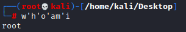
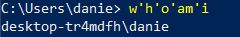
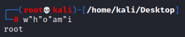
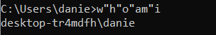
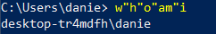

Single and Double quotes (Linux Windows)
Common and easy obfuscation technique is
inserting certain characters within our command that are usually ignored by command shells like Bash or PowerShell and will execute the same command as if they were not there.
Single and Double quoteswe cannot mix types of quotes(' with ") and the number of quotes must be even
•
single-quote ' (Linux, Powershell)
◇ whoami → w'h'o'am'i
 •
double-quote " (Linux , CMD, Powershell)
◇ whoami → w"h"o"am"i
  